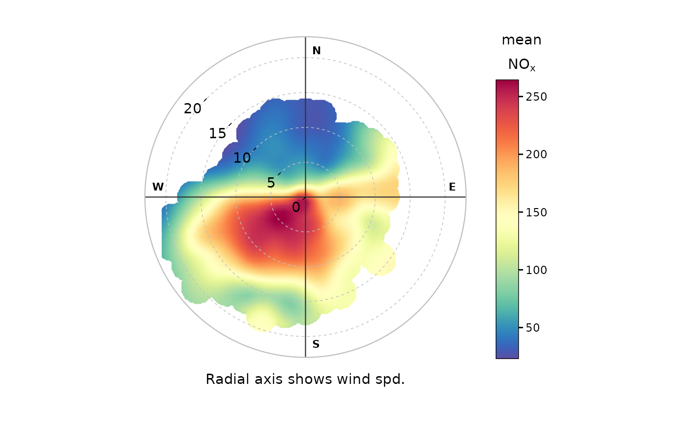

Function for plotting pollutant concentration in polar coordinates showing
concentration by wind speed (or another numeric variable) and direction. Mean
concentrations are calculated for wind speed-direction ‘bins’ (e.g.
0-1, 1-2 m/s,... and 0-10, 10-20 degrees etc.). To aid interpretation,
gam smoothing is carried out using mgcv.
Usage
polarPlot(
mydata,
pollutant = "nox",
x = "ws",
wd = "wd",
type = "default",
statistic = "mean",
limits = NULL,
exclude.missing = TRUE,
uncertainty = FALSE,
percentile = NA,
cols = "default",
weights = c(0.25, 0.5, 0.75),
min.bin = 1,
col.na = "grey",
upper = NA,
angle.scale = 315,
units = x,
force.positive = TRUE,
k = 100,
normalise = FALSE,
breaks = NULL,
labels = NULL,
key.title = paste(statistic, pollutant, sep = " "),
key.position = "right",
auto.text = TRUE,
ws_spread = 1.5,
wd_spread = 5,
x_error = NA,
y_error = NA,
kernel = "gaussian",
formula.label = TRUE,
tau = 0.5,
plot = TRUE,
key = NULL,
...
)Arguments
- mydata
A data frame minimally containing a decimal wind direction, another variable to plot in polar coordinates (the default is a column
"ws"— wind speed) and a pollutant. Should also containdateif plots by time period are required.- pollutant
Mandatory. A pollutant name corresponding to a variable in a data frame should be supplied e.g.
pollutant = "nox". There can also be more than one pollutant specified e.g.pollutant = c("nox", "no2"). The main use of using two or more pollutants is for model evaluation where two species would be expected to have similar concentrations. This saves the user stacking the data and it is possible to work with columns of data directly. A typical use would bepollutant = c("obs", "mod")to compare two columns “obs” (the observations) and “mod” (modelled values). When pair-wise statistics such as Pearson correlation and regression techniques are to be plotted,pollutanttakes two elements too. For example,pollutant = c("bc", "pm25")where"bc"is a function of"pm25".- x
Name of variable to plot against wind direction in polar coordinates, the default is wind speed, “ws”.
- wd
The name of the column in
mydatarepresenting the decimal wind direction, 0 to 360 where 0/360 are North and 180 is South. Defaults to"wd".- type
Character string(s) defining how data should be split/conditioned before plotting.
"default"produces a single panel using the entire dataset. Any other options will split the plot into different panels - a roughly square grid of panels if onetypeis given, or a 2D matrix of panels if twotypesare given.typeis always passed tocutData(), and can therefore be any of:A built-in type defined in
cutData()(e.g.,"season","year","weekday", etc.). For example,type = "season"will split the plot into four panels, one for each season.The name of a numeric column in
mydata, which will be split inton.levelsquantiles (defaulting to 4).The name of a character or factor column in
mydata, which will be used as-is. Commonly this could be a variable like"site"to ensure data from different monitoring sites are handled and presented separately. It could equally be any arbitrary column created by the user (e.g., whether a nearby possible pollutant source is active or not).
Most
openairplotting functions can take twotypearguments. If two are given, the first is used for the columns and the second for the rows.- statistic
The statistic that should be applied to each wind speed/direction bin. Because of the smoothing involved, the colour scale for some of these statistics is only to provide an indication of overall pattern and should not be interpreted in concentration units e.g. for
statistic = "weighted.mean"where the bin mean is multiplied by the bin frequency and divided by the total frequency. In many cases usingpolarFreqwill be better. Settingstatistic = "weighted.mean"can be useful because it provides an indication of the concentration * frequency of occurrence and will highlight the wind speed/direction conditions that dominate the overall mean.Can be:“mean” (default), “median”, “max” (maximum), “frequency”. “stdev” (standard deviation), “weighted.mean”.
statistic = "nwr"Implements the Non-parametric Wind Regression approach of Henry et al. (2009) that uses kernel smoothers. Theopenairimplementation is not identical because Gaussian kernels are used for both wind direction and speed. The smoothing is controlled byws_spreadandwd_spread.statistic = "cpf"the conditional probability function (CPF) is plotted and a single (usually high) percentile level is supplied. The CPF is defined as CPF = my/ny, where my is the number of samples in the y bin (by default a wind direction, wind speed interval) with mixing ratios greater than the overall percentile concentration, and ny is the total number of samples in the same wind sector (see Ashbaugh et al., 1985). Note that percentile intervals can also be considered; seepercentilefor details.When
statistic = "r"orstatistic = "Pearson", the Pearson correlation coefficient is calculated for two pollutants. The calculation involves a weighted Pearson correlation coefficient, which is weighted by Gaussian kernels for wind direction an the radial variable (by default wind speed). More weight is assigned to values close to a wind speed-direction interval. Kernel weighting is used to ensure that all data are used rather than relying on the potentially small number of values in a wind speed-direction interval.When
statistic = "Spearman", the Spearman correlation coefficient is calculated for two pollutants. The calculation involves a weighted Spearman correlation coefficient, which is weighted by Gaussian kernels for wind direction an the radial variable (by default wind speed). More weight is assigned to values close to a wind speed-direction interval. Kernel weighting is used to ensure that all data are used rather than relying on the potentially small number of values in a wind speed-direction interval."robust_slope"is another option for pair-wise statistics and"quantile.slope", which uses quantile regression to estimate the slope for a particular quantile level (see alsotaufor setting the quantile level)."york_slope"is another option for pair-wise statistics which uses the York regression method to estimate the slope. In this method the uncertainties inxandyare used in the determination of the slope. The uncertainties are provided byx_errorandy_error— see below.
- limits
The function does its best to choose sensible limits automatically. However, there are circumstances when the user will wish to set different ones. An example would be a series of plots showing each year of data separately. The limits are set in the form
c(lower, upper), solimits = c(0, 100)would force the plot limits to span 0-100.- exclude.missing
Setting this option to
TRUE(the default) removes points from the plot that are too far from the original data. The smoothing routines will produce predictions at points where no data exist i.e. they predict. By removing the points too far from the original data produces a plot where it is clear where the original data lie. If set toFALSEmissing data will be interpolated.- uncertainty
Should the uncertainty in the calculated surface be shown? If
TRUEthree plots are produced on the same scale showing the predicted surface together with the estimated lower and upper uncertainties at the 95% confidence interval. Calculating the uncertainties is useful to understand whether features are real or not. For example, at high wind speeds where there are few data there is greater uncertainty over the predicted values. The uncertainties are calculated using the GAM and weighting is done by the frequency of measurements in each wind speed-direction bin. Note that if uncertainties are calculated then the type is set to "default".- percentile
If
statistic = "percentile"thenpercentileis used, expressed from 0 to 100. Note that the percentile value is calculated in the wind speed, wind direction ‘bins’. For this reason it can also be useful to setmin.binto ensure there are a sufficient number of points available to estimate a percentile. Seequantilefor more details of how percentiles are calculated.percentileis also used for the Conditional Probability Function (CPF) plots.percentilecan be of length two, in which case the percentile interval is considered for use with CPF. For example,percentile = c(90, 100)will plot the CPF for concentrations between the 90 and 100th percentiles. Percentile intervals can be useful for identifying specific sources. In addition,percentilecan also be of length 3. The third value is the ‘trim’ value to be applied. When calculating percentile intervals many can cover very low values where there is no useful information. The trim value ensures that values greater than or equal to the trim * mean value are considered before the percentile intervals are calculated. The effect is to extract more detail from many source signatures. See the manual for examples. Finally, if the trim value is less than zero the percentile range is interpreted as absolute concentration values and subsetting is carried out directly.- cols
Colours to use for plotting. Can be a pre-set palette (e.g.,
"turbo","viridis","tol","Dark2", etc.) or a user-defined vector of R colours (e.g.,c("yellow", "green", "blue", "black")- seecolours()for a full list) or hex-codes (e.g.,c("#30123B", "#9CF649", "#7A0403")). Alternatively, can be a list of arguments to control the colour palette more closely (e.g.,palette,direction,alpha, etc.). SeeopenColours()andcolourOpts()for more details.- weights
At the edges of the plot there may only be a few data points in each wind speed-direction interval, which could in some situations distort the plot if the concentrations are high.
weightsapplies a weighting to reduce their influence. For example and by default if only a single data point exists then the weighting factor is 0.25 and for two points 0.5. To not apply any weighting and use the data as is, useweights = c(1, 1, 1).An alternative to down-weighting these points they can be removed altogether using
min.bin.- min.bin
The minimum number of points allowed in a wind speed/wind direction bin. The default is 1. A value of two requires at least 2 valid records in each bin an so on; bins with less than 2 valid records are set to NA. Care should be taken when using a value > 1 because of the risk of removing real data points. It is recommended to consider your data with care. Also, the
polarFreqfunction can be of use in such circumstances.- col.na
When
min.binis > 1 it can be useful to show where data are removed on the plots. This is done by shading the missing data incol.na. To not highlight missing data whenmin.bin> 1 choosecol.na = "transparent".- upper
This sets the upper limit wind speed to be used. Often there are only a relatively few data points at very high wind speeds and plotting all of them can reduce the useful information in the plot.
- angle.scale
In radial plots (e.g.,
polarPlot()), the radial scale is drawn directly on the plot itself. While suitable defaults have been chosen, sometimes the placement of the scale may interfere with an interesting feature.angle.scalecan take any value between0and360to place the scale at a different angle, orFALSEto move it to the side of the plots.- units
The units shown on the polar axis scale.
- force.positive
The default is
TRUE. Sometimes if smoothing data with steep gradients it is possible for predicted values to be negative.force.positive = TRUEensures that predictions remain positive. This is useful for several reasons. First, with lots of missing data more interpolation is needed and this can result in artefacts because the predictions are too far from the original data. Second, if it is known beforehand that the data are all positive, then this option carries that assumption through to the prediction. The only likely time where settingforce.positive = FALSEwould be if background concentrations were first subtracted resulting in data that is legitimately negative. For the vast majority of situations it is expected that the user will not need to alter the default option.- k
This is the smoothing parameter used by the
gamfunction in packagemgcv. Typically, value of around 100 (the default) seems to be suitable and will resolve important features in the plot. The most appropriate choice ofkis problem-dependent; but extensive testing of polar plots for many different problems suggests a value ofkof about 100 is suitable. Settingkto higher values will not tend to affect the surface predictions by much but will add to the computation time. Lower values ofkwill increase smoothing. Sometimes with few data to plotpolarPlotwill fail. Under these circumstances it can be worth lowering the value ofk.- normalise
If
TRUEconcentrations are normalised by dividing by their mean value. This is done after fitting the smooth surface. This option is particularly useful if one is interested in the patterns of concentrations for several pollutants on different scales e.g. NOx and CO. Often useful if more than onepollutantis chosen.- breaks, labels
If a categorical colour scale is required,
breaksshould be specified. This can be either of:A single value, which will divide the scale into
breakslevels using the same logic ascutData(). For example,breaks = 5will split the scale into five quantiles.A numeric vector, which will define the specific breakpoints. For example,
c(0, 50, 100)will bin the data into0 to 50,50 to 100, and so on. Ifbreaksdoes not cover the full range of the data, the outer limits will be extended so that the full colour scale is covered while retaining the desired number of breaks.
By default,
breakswill generate nicely formatted labels for each category. Thelabelsargument overrides this - for example, a user could definebreaks = 3, labels = c("low", "medium", "high"). Care should be taken to provide the appropriate number oflabels- it should be equal tobreaksif a single value is given, or equal tolength(breaks)-1ifbreaksis a vector.- key.title
Used to set the title of the legend. The legend title is passed to
quickText()ifauto.text = TRUE.- key.position
Location where the legend is to be placed. Allowed arguments include
"top","right","bottom","left"and"none", the last of which removes the legend entirely.- auto.text
Either
TRUE(default) orFALSE. IfTRUEtitles and axis labels will automatically try and format pollutant names and units properly, e.g., by subscripting the "2" in "NO2". Passed toquickText().- ws_spread
The value of sigma used for Gaussian kernel weighting of wind speed when
statistic = "nwr"or when correlation and regression statistics are used such as r. Default is0.5.- wd_spread
The value of sigma used for Gaussian kernel weighting of wind direction when
statistic = "nwr"or when correlation and regression statistics are used such as r. Default is4.- x_error
The
xerror / uncertainty used whenstatistic = "york_slope".- y_error
The
yerror / uncertainty used whenstatistic = "york_slope".- kernel
Type of kernel used for the weighting procedure for when correlation or regression techniques are used. Only
"gaussian"is supported but this may be enhanced in the future.- formula.label
When pair-wise statistics such as regression slopes are calculated and plotted, should a formula label be displayed?
formula.labelwill also determine whether concentration information is printed whenstatistic = "cpf".- tau
The quantile to be estimated when
statisticis set to"quantile.slope". Default is0.5which is equal to the median and will be ignored if"quantile.slope"is not used.- plot
When
openairplots are created they are automatically printed to the active graphics device.plot = FALSEdeactivates this behaviour. This may be useful when the plot data is of more interest, or the plot is required to appear later (e.g., later in a Quarto document, or to be saved to a file).- key
Deprecated; please use
key.position. IfFALSE, setskey.positionto"none".- ...
Addition options are passed on to
cutData()fortypehandling. Some additional arguments are also available, varying somewhat in different plotting functions:title,subtitle,caption,tag,xlabandylabcontrol the plot title, subtitle, caption, tag, x-axis label and y-axis label, passed toggplot2::labs()viaquickText()ifauto.text = TRUE.xlim,ylimandlimitscontrol the limits of the x-axis, y-axis and colorbar scales.ncolandnrowset the number of columns and rows in a faceted plot.scalescan be"fixed","free_x","free_y"or"free"to control whether axes are shared across facets when usingtype. Also supported are the legacyx.relationandy.relation, which can be either"same"or"free"and get remapped toscalesautomatically.Similarly,
space,axes,axis.labels,switchandstrip.positioncan be used to customise the appearance of faceted plots. Seeggplot2::facet_wrap()andggplot2::facet_grid()for the arguments these take.fontsizeoverrides the overall font size of the plot by setting thetextargument ofggplot2::theme(). It may also be applied proportionately to anyopenairannotations (e.g., N/E/S/W labels on polar coordinate plots).Various graphical parameters are also supported:
linewidth,linetype,shape,size,border, andalpha. Not all parameters apply to all plots. These can take a single value, or a vector of multiple values - e.g.,shape = c(1, 2)- which will be recycled to the length of values needed.lineend,linejoinandlinemitretweak the appearance of line plots; seeggplot2::geom_line()for more information.In polar coordinate plots,
annotate = FALSEwill remove the N/E/S/W labels and any other annotations.
Value
an openair object. data contains four set
columns: cond, conditioning based on type; u and v, the
translational vectors based on ws and wd; and the local pollutant
estimate.
Details
The bivariate polar plot is a useful diagnostic tool for quickly gaining an idea of potential sources. Wind speed is one of the most useful variables to use to separate source types (see references). For example, ground-level concentrations resulting from buoyant plumes from chimney stacks tend to peak under higher wind speed conditions. Conversely, ground-level, non-buoyant plumes such as from road traffic, tend to have highest concentrations under low wind speed conditions. Other sources such as from aircraft engines also show differing characteristics by wind speed.
The function has been developed to allow variables other than wind speed to be plotted with wind direction in polar coordinates. The key issue is that the other variable plotted against wind direction should be discriminating in some way. For example, temperature can help reveal high-level sources brought down to ground level in unstable atmospheric conditions, or show the effect a source emission dependent on temperature e.g. biogenic isoprene.
The plots can vary considerably depending on how much smoothing is done. The
approach adopted here is based on the very flexible and capable mgcv
package that uses Generalized Additive Models. While methods do exist to
find an optimum level of smoothness, they are not necessarily useful. The
principal aim of polarPlot is as a graphical analysis rather than for
quantitative purposes. In this respect the smoothing aims to strike a balance
between revealing interesting (real) features and overly noisy data. The
defaults used in polarPlot() are based on the analysis of data from many
different sources. More advanced users may wish to modify the code and adopt
other smoothing approaches.
Various statistics are possible to consider e.g. mean, maximum, median.
statistic = "max" is often useful for revealing sources. Pair-wise
statistics between two pollutants can also be calculated.
The function can also be used to compare two pollutant species through a
range of pair-wise statistics (see help on statistic) and Grange et al.
(2016) (open-access publication link below).
Wind direction is split up into 10 degree intervals and the other variable (e.g. wind speed) 30 intervals. These 2D bins are then used to calculate the statistics.
These plots often show interesting features at higher wind speeds (see
references below). For these conditions there can be very few measurements
and therefore greater uncertainty in the calculation of the surface. There
are several ways in which this issue can be tackled. First, it is possible to
avoid smoothing altogether and use polarFreq(). Second, the effect of
setting a minimum number of measurements in each wind speed-direction bin can
be examined through min.bin. It is possible that a single point at high
wind speed conditions can strongly affect the surface prediction. Therefore,
setting min.bin = 3, for example, will remove all wind speed-direction bins
with fewer than 3 measurements before fitting the surface. Third, consider
setting uncertainty = TRUE. This option will show the predicted surface
together with upper and lower 95% confidence intervals, which take account of
the frequency of measurements.
References
Ashbaugh, L.L., Malm, W.C., Sadeh, W.Z., 1985. A residence time probability analysis of sulfur concentrations at ground canyon national park. Atmospheric Environment 19 (8), 1263-1270.
Carslaw, D.C., Beevers, S.D, Ropkins, K and M.C. Bell (2006). Detecting and quantifying aircraft and other on-airport contributions to ambient nitrogen oxides in the vicinity of a large international airport. Atmospheric Environment. 40/28 pp 5424-5434.
Carslaw, D.C., & Beevers, S.D. (2013). Characterising and understanding emission sources using bivariate polar plots and k-means clustering. Environmental Modelling & Software, 40, 325-329. DOI: 10.1016/j.envsoft.2012.09.005.
Henry, R.C., Chang, Y.S., Spiegelman, C.H., 2002. Locating nearby sources of air pollution by nonparametric regression of atmospheric concentrations on wind direction. Atmospheric Environment 36 (13), 2237-2244.
Henry, R., Norris, G.A., Vedantham, R., Turner, J.R., 2009. Source region identification using Kernel smoothing. Environ. Sci. Technol. 43 (11), 4090e4097. DOI: 10.1021/es8011723.
Uria-Tellaetxe, I. and D.C. Carslaw (2014). Source identification using a conditional bivariate Probability function. Environmental Modelling & Software, Vol. 59, 1-9.
Westmoreland, E.J., N. Carslaw, D.C. Carslaw, A. Gillah and E. Bates (2007). Analysis of air quality within a street canyon using statistical and dispersion modelling techniques. Atmospheric Environment. Vol. 41(39), pp. 9195-9205.
Yu, K.N., Cheung, Y.P., Cheung, T., Henry, R.C., 2004. Identifying the impact of large urban airports on local air quality by nonparametric regression. Atmospheric Environment 38 (27), 4501-4507.
Grange, S. K., Carslaw, D. C., & Lewis, A. C. 2016. Source apportionment advances with bivariate polar plots, correlation, and regression techniques. Atmospheric Environment. 145, 128-134. DOI: 10.1016/j.atmosenv.2016.09.016.
See also
Other polar directional analysis functions:
percentileRose(),
polarAnnulus(),
polarCluster(),
polarDiff(),
polarFreq(),
pollutionRose(),
windRose()
Examples
# basic plot
polarPlot(mydata, pollutant = "nox")

if (FALSE) { # \dontrun{
# polarPlots by year on same scale
polarPlot(mydata, pollutant = "so2", type = "year", title = "polarPlot of so2")
# set minimum number of bins to be used to see if pattern remains similar
polarPlot(mydata, pollutant = "nox", min.bin = 3)
# plot by day of the week
polarPlot(mydata, pollutant = "pm10", type = "weekday")
# show the 95% confidence intervals in the surface fitting
polarPlot(mydata, pollutant = "so2", uncertainty = TRUE)
# Pair-wise statistics
# Pearson correlation
polarPlot(mydata, pollutant = c("pm25", "pm10"), statistic = "r")
# Robust regression slope, takes a bit of time
polarPlot(mydata, pollutant = c("pm25", "pm10"), statistic = "robust.slope")
# Least squares regression works too but it is not recommended, use robust
# regression
# polarPlot(mydata, pollutant = c("pm25", "pm10"), statistic = "slope")
} # }